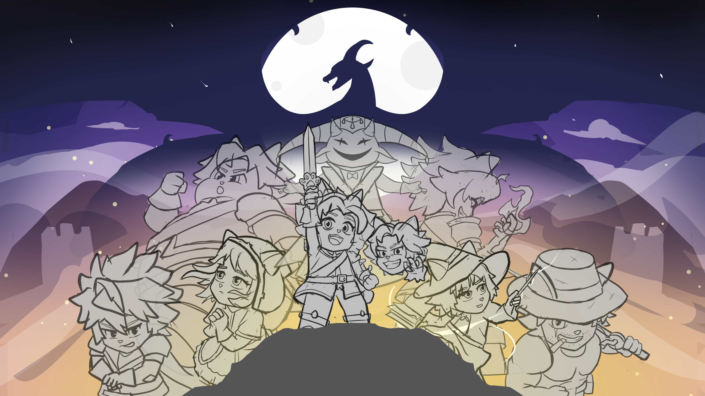
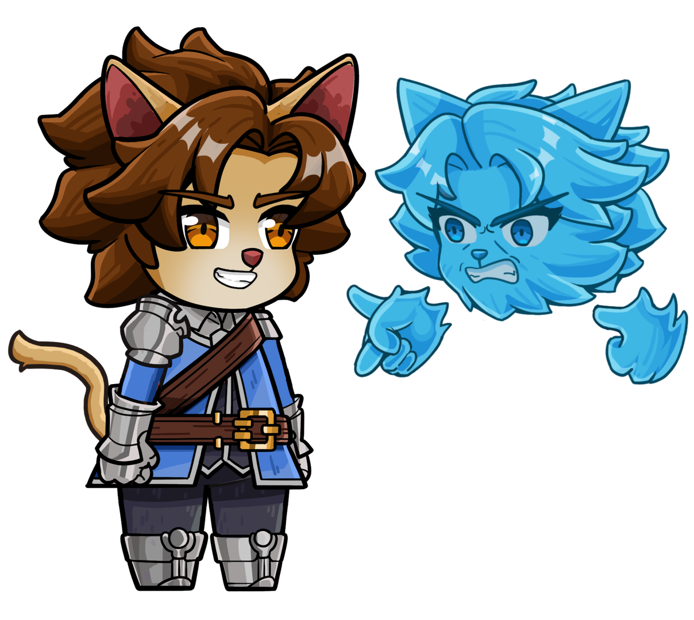

Combat Identity
Parry Is Identity
Precision posture combat built around reading, deflecting, breaking, and dominating enemies througt mastery ladder: Parry, Perfect, Poise, and Divine.
ParryPerfectPoiseDivine
Meowstoria is a parry-focused soulslike with monster-eating progression, where players hunt, cook, and eat monsters to grow stronger and become the God of Parry

Combat Identity
Precision posture combat built around reading, deflecting, breaking, and dominating enemies througt mastery ladder: Parry, Perfect, Poise, and Divine.
Battle Transformation
Shift the flow of battle through Fat Mode and Zed’s possession-driven takeover states.
Monster-Eating Progression
Monsters become ingredients, dishes, Nutrition Points, Fat fuel, buffs, Sigils, and long-term growth.
Prepare for the next hunt through a spectacle-driven food ritual that fuels momentum and transformation
World Structure
Defeat, cook, and eat the seven Main Boss meals to activate Crown Sigils and reveal Chronovale.

In a world where magic defines worth, Lionis was born with none. Zed saves him through a soul pact, awakening a forbidden path: hunt monsters, cook them, eat them, and become strong enough to challenge the Calamity Dragon.
What begins as survival becomes a story about friendship, possession, sacrifice, and refusing to lose the soul that saved you.